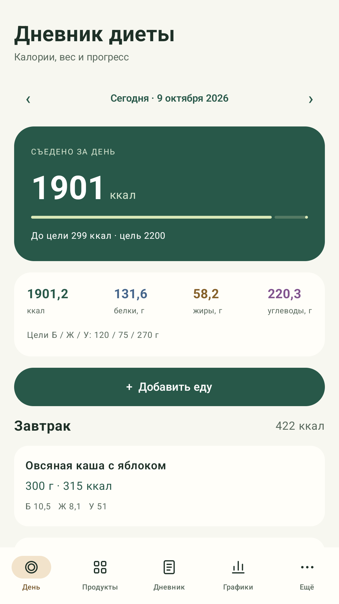
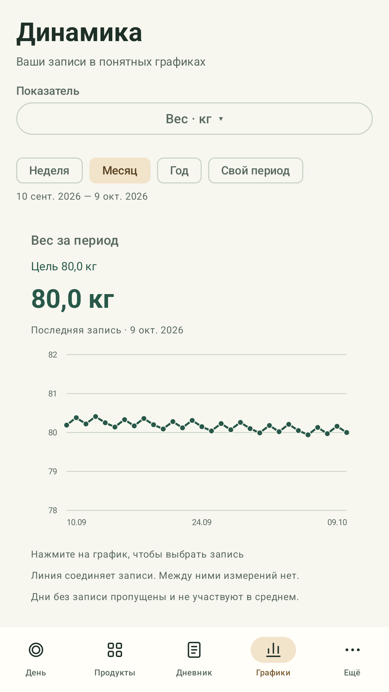

Core calculations and records work offline without an account. Google Drive synchronization is optional. The app contains advertisements.

Actual app screen · Russian interface · sample data
At your own pace
From a food portion to a clear chart
01
Food and recipes
Use the built-in food catalog, edit nutritional values per 100 g, or add your own foods and dishes. Combine ingredients into a recipe and set its cooked weight.
Organize portions by date and meal. Edit or remove entries whenever needed.
02
Optional measurements
Record weight, waist, body fat, steps, sleep, strength training and notes. Leave any optional field empty.
Measurements, steps and sleep are entered manually. The app does not connect to watches, scales or Health Connect.
03
History and goals
Set your own calorie, macronutrient and weight goals. View weekly, monthly, yearly or custom charts, compare days and earn diary achievements.
Light and dark themes follow your phone settings.

See measurements over time
Keep control of your records
Your main diary stays on your device. Export it as a JSON file and restore it from a backup you choose.
You can start without filling in every field or connecting an account. Food values are a reference: check product labels and choose your own goals.
Google Drive stores diary backups and helps merge your entries across your devices.
Open More → Cloud sync in the app and choose to connect Google.
Select your account in the Google browser sign-in page and review the requested permissions. Your password is entered with Google.
The app reads and writes its own JSON snapshots in its hidden app-data folder in your Drive. Automatic sync can be switched off.
The account you choose
openid and email identify the selected Google account and display its email in connection settings.
Only the app’s own data
https://www.googleapis.com/auth/drive.appdata provides access to this app’s hidden storage. It does not grant access to your ordinary Drive documents or photos.
Snapshots include foods, food entries, measurements, notes, goals, achievements and synchronization metadata. The app does not use diary contents or Google data for advertising, sell them, or use them to train AI models. The developer operates no server receiving the diary.
Disconnecting keeps your local diary and existing cloud copies. Follow the deletion instructions to remove them. Google services are optional and may not be available in your region or network; the local diary still works without them.
Version 1.2.1. All builds support Russian, English and Simplified Chinese; the interface follows your Android language settings. APKs share the same signing key and can update an existing installation.
Files are hosted in GitHub Releases. These are direct APK downloads, not store listing links. Download availability depends on your region and network.
About the app and support
Developer and operator: Sergey Efremov, Russia. Public project name: Efreitor2001. App: Diet Diary (Дневник диеты; 饮食日记). Android package: ru.dietdiary.offline.
For app, Google connection, privacy or deletion questions, email pokimoha.123@gmail.com. You can also report a bug in the project repository. Do not include passwords, access tokens or your full diary. GitHub issues are public.
The app is not a medical device. It does not diagnose, treat, cure or prevent disease. Consult a qualified healthcare professional for medical advice, diagnosis and treatment.